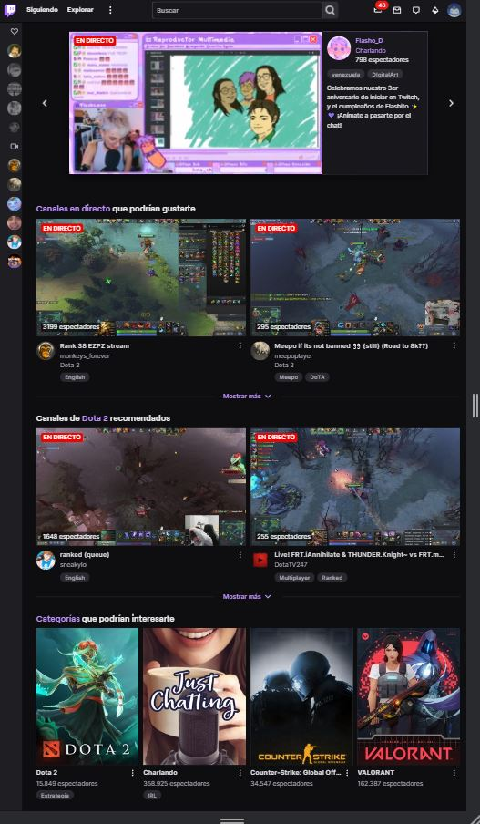
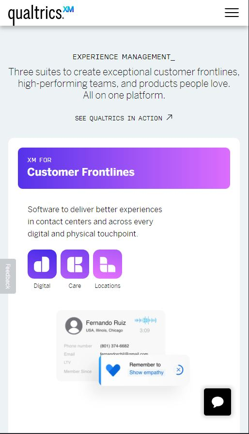

Design Principles Document
John Garcia
Visual Hierarchy
Twitch
twitch.tv

This is a good example of Visual Hierarchy applied to a web app. We can see how Twitch arrange its elements to show an order of importance. They try to take away as much information
as they can from our eyes and present us a visual hierarchy to help us navigate the page and have a better user experience. The app uses an algorithm to select what they think might be our interests
and what we might want to watch and they show it within two recommendation banners. They also show what is currently trending as their main element (the one with the most visual hierarchy), and the channels we follow
are shown in a small line on the left because it is something we want to search for; therefore they don't need to strategically show it.
Hick's Law
Udemy
udemy.com
In this design, I consider that it is a good Hick's Law example for the following reasons: Udemy gives a really good
recommendation in general about which course should be the next one that I take, this is by giving the best options
according to the community opinion. Also, it could be according to the content that I have consumed before,
it could be according to my language preferences, etc.. It gives you a lot of help to decide on the options that the website shows you,
making the way the user chooses between the options easier.
White Space and Clean Design
Qualtrics
qualtrics.com

In this example, Qualtrics uses the white space really well making the text more readable and not distracting us from the essential information. They are trying to sell a product,
so it is easier for us to understand the basics of each product while we are scrolling down and using a clean design it becomes intuitive to click on the colorful banners to get more information
about the product we choose.